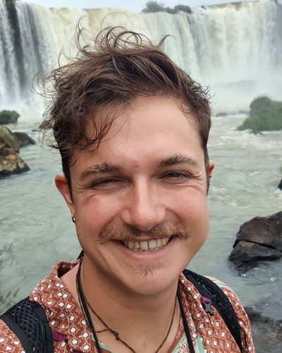

Hi! I'm Dario Rancati &mdash. I'm a PhD student at the Institute of Science and Technology Austria (ISTA) in the Causal Learning and AI group, where I am fortunate to be supervised by Francesco Locatello and, through ELLIS, by Max Welling at the University of Amsterdam. Before joining ISTA, I spent three years as an Applied Scientist at AWS in the Textract team, where I worked on deep learning for OCR and document understanding, focusing on multimodal approaches that jointly leverage text and visual data. Previously, I got my BSc and MSc in Mathematics from Scuola Normale Superiore in Pisa, Italy.
The goal of my research is to study modern machine learning through the lens of stochastic thermodynamics and optimal transport. I focus mainly on causality in time series, population dynamics, and diffusion-based generative modelling.
Email: [name].[surname]@ist.ac.at]